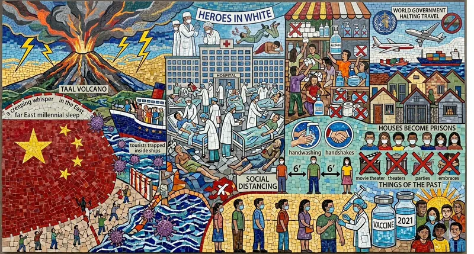

2020: The Year That Never Was

Gemini AI's interpretation of my Prose Poem
2020 began with an ominous omen:
Taal Volcano, wakes up from its millennial sleep
with thunder and ash.
Then from the far East, a creeping whisper
of an invisible specter that steals breath.
A sickness that quickly spreads,
through sneeze or cough, swiftly spilling
beyond borders, trapping tourists
inside ships.
Hospitals filled to the brim
with the sick and dying;
Countless heroes in white fall victim
to exhaustion and disease.
People shop and hoard in panic —
toilet paper, alcohol, masks in short supply.
World governments halt travel and trade;
houses become prisons.
Days stretch to weeks,
stretch to months, to a year.
Social distancing becomes the norm
as everyone quarantines inside their homes.
Handwashing takes the place of handshakes,
Masks replace smiles and hugs.
Movies, theaters, parties
are now a thing of the past.
We hide and bide our time
as vaccines are swiftly made,
waiting in line for the prick
to keep us from getting sick.